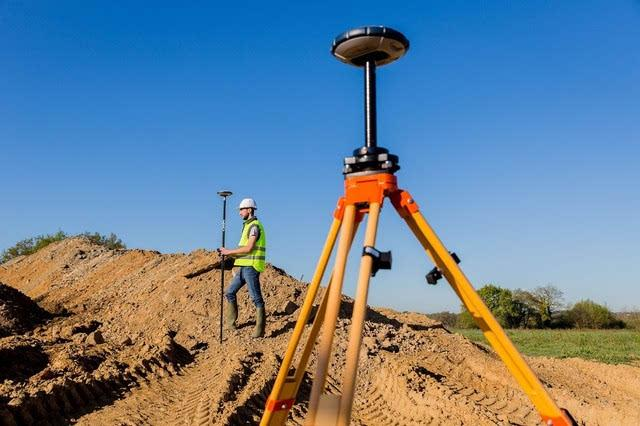
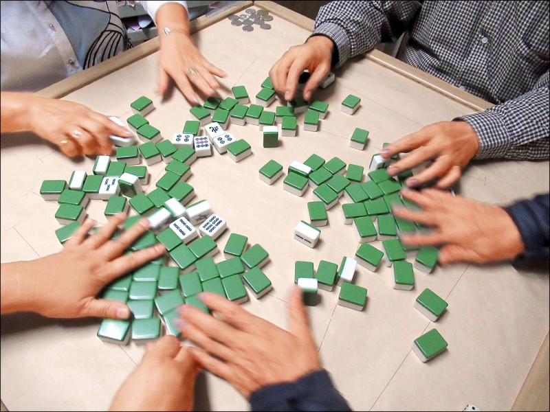

我的生平（十六）
现在是2025年，回看三十年前，只觉得中国的变化太快了。也许二三十年后，40后、50后们，看到我这篇文章，看到我的博客，能够心有感触。
这就是为什么我要写博客、写生平的一点目的。
我的生平，从我的角度侧面反映了中国的发展变化。
一九九几年的时候，全国职工月平均工资为500元左右。据我朋友所说，他的爸妈（教师）工资加起来只有500块钱。我爸爸的工资是四五千一个月。在我上小学的时候，我拥有了人生中的第一台电脑。 我爸经常会给我下载一些猫和老鼠的动画片看。
我从来都认为我家里很穷，也许是因为我毕业于艺术学院（艺术学院的有钱人太多了）。但我被人提醒，其实并不是这样。
其实我并不知道我爸的工资是多少，他也从来没有和我说过。直到被人提醒以后，说零几年就有个人笔记本电脑的孩子并不是大多数。我才想起了问问我妈妈。
用一个词形容我家，那就是”家境中落“。
我本来是一个“富二代”，但并没有变成真正的富二代。究竟是怎么回事呢？ 请听我细细道来。
我爸的名字叫“卫东”。这样的名字在那个时代十分常见，就像现在的人给孩子起名叫子涵、梓涵、子墨、紫萱。 我爸的学历是中专学历。
在60年代出生的那帮人里，中专学历是很高的学历了。如果是大学学历，那就可以包分配铁饭碗工作。 顺便一提，我爸的弟弟就是大学学历。
我爸的专业是土木工程学院里面的测量小专业。 土木工程专业的中国过去是最火的专业之一，也是最赚钱的专业之一。 土木工程专业的分数线曾经比计算机专业的分数线要高。

有些读者可能并不知道，测量、测绘专业是什么。

以下是GPT对于该专业的介绍：
📐📏 测量测绘专业 是什么？
全称一般叫做 测绘工程，它是工学类的一个专业，主要研究地球表面和空间位置的测量、绘图、数据处理和空间信息应用。简单说，就是用各种测量工具和方法，获取地面、地下、水下、空中甚至太空中物体的位置、形状、大小和变化情况，然后把这些信息变成地图、模型、数据平台，服务于城市建设、交通、国防、资源开发、导航、地理信息系统等领域。
📌 举个例子：
比如你现在在建一个大型商场，需要知道地基有没有下沉、钢结构有没有变形，测绘工程师就会上场用高精度设备持续监测位置、变形情况，实时出具数据，保障工程安全。
又比如城市需要更新数字地图，测绘工程师就会用无人机拍摄城市地形，建三维模型，接入城市大脑、导航、应急系统。
✅ 总结一句：
测量测绘专业是“空间信息获取 + 空间数据分析 + 空间模型表达”的技术型专业，应用广、设备酷、实用性强。
总而言之，测量就是中国房地产行业的一个刚需行业。
我爸的工作需要和计算机打交道，用的软件叫CAD。中国一带一路，也有去国外发展的机会。
✏️ 什么是 CAD？
CAD 全称是 Computer-Aided Design，意思是 计算机辅助设计。
简单说，它就是用电脑来画图、设计、建模的软件。跟以前手工画图板、铅笔、尺子画设计图不一样，CAD能又快又准地画出工程图、建筑图、机械图、电子图、线路图、甚至3D模型。
🎨 CAD 都能做什么？
不同专业用CAD画的内容不一样，比如：
- 建筑设计：房子的平面图、立面图、剖面图。
- 工程测绘：地形图、放样图、地籍图。
- 机械设计：机械零件、装配图、爆炸图。
- 室内设计：室内布置图、家具布置、灯光布置。
- 电气工程：电路图、布线图、接线图。
- 3D建模（部分高级CAD）
📌 常见的 CAD 软件
| 名称 | 用途方向 | 特点 |
|---|---|---|
| AutoCAD | 通用建筑、机械、测绘 | 功能最全，行业应用最广 |
| Civil 3D | 土木工程、道路、管线 | AutoCAD的土木工程加强版 |
| SolidWorks | 机械设计、3D建模 | 三维建模和机械仿真非常强 |
| SketchUp | 建筑、景观、室内 | 简单易学，偏三维效果建模 |
| MicroStation | 工程、铁路、桥梁 | 大型项目常用 |
其中最常听说、学校和公司用得最多的就是 AutoCAD。
📖 举个例子：
你测绘专业学完了地形测量，回去把点位坐标输入到CAD里，就可以绘制出一张带等高线、道路、建筑物位置的地形图。再配合图层、文字、尺寸标注，最后打印出来就是工程用图，直接能交给设计师或者施工方。
✅ 总结一句：
CAD = 电脑画图 + 设计工具，谁用谁真香。
而且几乎所有跟“画图”、“设计”沾边的专业都会用到它。
房地产
我的原生家庭，和房地产脱不了干系。 所以不得不提一下房地产。
📖 什么是“大基建”？
“大基建”是“大型基础设施建设”的简称，指的是国家和地方政府主导，投入大量资金、人力、技术，建设各种关系国计民生、支撑经济社会发展的大型工程项目。
📌 包括哪些内容？
常见的大基建项目有：
🚄 高铁、铁路、公路、地铁
🏞️ 桥梁、隧道、水库、港口、机场
🏙️ 城市道路、城市新区开发、旧城改造
🏗️ 大型水利工程（三峡工程、南水北调）
🏢 学校、医院、产业园、体育馆
⚡ 电力、水利、通信、油气输送等管网工程
🛰️ 5G、光纤、数据中心、卫星导航（“新基建”部分）
你可以把它理解为给城市和国家打地基、修骨架、通血管、建大动脉。
🏗️ 为什么中国要搞“大基建”？
📈 1. 拉动经济增长
基建投资对GDP贡献很大，一建公路、一修高铁、一搞水库，能带动钢铁、水泥、机械、设计、房地产、运输、就业，快速形成大规模经济活动。
🛡️ 2. 改善民生，缩小区域差距
通过高铁、公路、桥梁、地铁等，提升中西部、山区、贫困地区交通和生活条件，促进区域平衡发展。
🌐 3. 提升国家竞争力
中国用不到20年，修出了世界最大高铁网、最大港口、最长跨海大桥，这些都是国家实力、全球话语权的重要体现。
🏙️ 4. 城市化需求
中国人口多、城市化快，城市、产业、人口不断集中，需要配套大量交通、住宅、医院、学校等基建。
🚄 中国大基建的牛项目举几个：
中国高铁：运营里程超过4万公里，世界第一。
港珠澳大桥：全长55公里，世界最长跨海大桥。
三峡大坝：世界最大水利发电工程。
南水北调：史上最大规模水利调水工程。
北京大兴国际机场：全球最大单体航站楼。
还有雄安新区、川藏铁路、粤港澳大湾区、海南自贸港、粤东高铁圈，现在还在建、计划中的一堆超级项目。
📌 总结一句：
中国大基建 = 拉动经济 + 改善民生 + 提升国力的超级工程计划
它是中国近年来经济发展和城市化进程中，最重要、最亮眼的部分之一，也让世界见识到了“中国速度”和“中国制造”的力量。
我爸爸参与过的大基建项目，我记得的有三峡大坝、五强溪水电站、东津水库
我爸的业余爱好是下围棋。 但棋艺平平。 他一直都喜欢在QQ游戏上，和别人对弈。 在深蓝出现之前如此，在AI打败柯洁后依然如此。
对了，他的兴趣爱好还有画画。 他曾经牵着我的手，带着我去画廊。拿着他画的画送到画廊作为商品。 他的画技也平平。
最重要的就是赌博了。 曾经我在中考之前，压力很大，他就带着我去彩票站玩刮刮乐。就一直刮，刮到开心为止。
除此之外，他和我妈妈都喜欢玩六合彩。
我爸妈还喜欢打牌。

我很讨厌这种活动，至今我也没搞清楚麻将游戏规则。 他们玩的时候，我就在地上捡槟榔渣（因为那时候我只有几岁）或者把麻将当作积木，垒起来堆长城玩。
我妈说那时候的房子是一万块钱左右一套。 那时候我家里有几套房，但是被我爸赌博输掉了。
除此之外，我爸还喜欢宴请四方、花钱大手大脚，没有理财思维，不读书不学习。
再后来，我爸找了个小三，小三和他一起开了个溜冰场。 溜冰场的名字叫“乖乖熊溜冰场”，地点在务川县。
我爸找了小三以后就和我妈离了婚。
我爸和小三闹分手以后，他就彻底没钱了。
我爸的故事说完了。
这个故事告诉我们，年轻人要多积蓄，投资（例如买黄金、购买升值的地产），不要碰赌博。
奶奶
我爸的故事讲完了，顺便讲讲我奶奶吧。
我奶奶的名字不知道，但年轻的时候好像在文工团工作。 她一辈子生了三个孩子，我爸爸是老大，老二是个女儿，老幺是个儿子。在那个年代算是生的少了吧。
我奶奶八十多岁了。我没有见过我爷爷。 所以给我的印象是男性都死得很早。
我奶奶是40后。 在1966年-1976年发生了文革。 那时候我奶奶的家就被抄家了。 我奶奶的子女还有一些象牙筷子、珠宝首饰、商铺什么的，但传给我的，除了一个姓氏，什么也没有了。哈哈。
我奶奶抄家的事情，我只是听她说过，我本人没有见过。 她说是“高家大院”，我在网上搜了一下，找到了个可能是的。
清末民初三大家族之一，贵阳的高家花园
贵州省工委旧址，原为高家花园。
高家，贵阳大地主。
贵阳：高家花园—见证历史沧桑
在贵阳市中心处，有一条唯一的石板古街-省府路的尽头的电台街，有一座建筑群，就是“高家花园”……
明末清初，高家从江西经湖南来到贵阳，在今乌当区的北衙村居住，从事农业生产……
1786年，高家27岁的高廷瑶（高家十一世祖）中贵州乡试第一名，但在以后的四次会试中均没有高中……
高廷瑶在42岁时，协助朝廷平息定番（今黔南州惠水县）、广顺（今黔南州长顺县广顺镇）苗民起事，战功卓越，获封六品顶戴，出任安徽省庐州通判。
后逐渐官至广州知府，后人称之为“广州公”。
从此开启了高家的富贵之门……
后逐渐在贵阳北衙、惠水、广顺大量购买土地，用于出租……
仅北衙十三寨就可收租二、三十万斤……
又在贵阳城中的文笔街一带购买土地用于建房……
贵阳二中所在地及周边500米街道,明清时期本是一片空旷之地，俗称“大坝子。”
青石铺砌的省府路东端尽头，向右拐个弯再往东有条幽静的小街叫文笔街，街口不远的北面有一座飞檐青瓦、朱门灰墙的小楼，上世纪50年代以前，这里是一座由古色古香、占地面积甚广的院落群连成一片的深宅大院-高家花园，又称高公馆，怡怡园，高家大屋。
有“高家的谷子”之称的贵阳名门望族高家就建在这里。
院门前石碑镌刻贵州省重点文物保护单位、贵州省工委活动旧址……
20世纪70年代，旧屋已被大部拆毁，1989年贵阳市政府出资修复重建高家花园之一部分，1997年辟为中共贵州省工委旧址纪念馆、贵州省爱国主义教育基地…..
据史料记载: 高家从明初入黔定居贵阳北郊乌当北衙村（今新添寨北衙路北衙村），十一世祖高廷瑶中乡试第一名入仕后从政近三十年，历任多年广东最富裕的广州知府，其薪俸大多用在家乡产粮区定番县和贵筑县北衙两地购置田产上，经过高家几代人的经营，到了清末，仅北衙十三寨年收租谷就有两千多担，约二三十万斤，“高家谷子”之称即由此而来……
为官多年还乡后，高廷瑶在贵阳城大坝子建造高家花园，由公馆及花园两部分组成，公馆前后六进，院落数十个相连相通，共有厅堂、房屋三百余间，居住人口达一百多人……
高家后人高旭所著《贵阳高家花园历史》一书中是这样描写的“文笔街一号到六号，占地约十余万平方尺的大屋，都为高家所拥有……
前门文笔街，后门忠烈街，右邻邬家巷，左自文明路至忠烈街，全属高家范围……
家人大都聚居六号。
一到四号，有大小厅房六十余间，由堂屋前三院，大开中间，成一直线，一院高过一院，由门口向上内望，气派非凡，壮观宏伟。”……
另一资料显示: 高家花园”又称为高公馆，怡园，高家大屋，建于清乾隆年间(1736-1795)，原是贵阳地方望族高家六代相袭的深宅大院，共有四进四合院，大小房间百间，堪称庭院深深。院内曾有不少楼台亭阁，花木森森，非常宏伟壮观……
高家花园原本的范围南临文笔街，北靠忠烈街，东邻邬家巷，西抵文明路，曾拥有文笔街1~6号六个门牌号，开有三个大朝门，占地约三万平方米。其中文笔街6号为正宅……高家花园由公馆及花园两部分组成，数个院落相连相通，居住人口达一百多人……仅其中的怡怡楼是一座两层八间的藏书楼，地下党在此活动期间，怡怡楼曾是秘密文件和宣传品的印刷及存放之地…..
富不过三代
以前有种说法叫做“光宗耀祖”， 现在的年轻人都不在乎这个了。 如果你死了，过个几代人就没有人记得你了。等你的孩子去世了，对你的回忆也完全不在了。
没人知道你曾在这个世界上来过。 什么光宗耀祖？
哈哈，只要你活得开心就足够了。 死的时候，什么也留不下，什么也带不走。